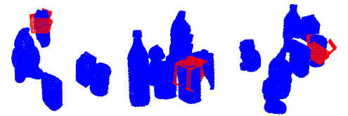
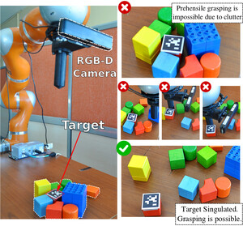

I am a PhD student at Aristotle University of Thessaloniki working with Dr. Sotiris Malassiotis and Prof. Zoe Doulgeri at Automation and Robotics Lab, AUTh. Prior to this I was an undergraduate student in the School of Electrical and Computer Engineering in the Aristotle University of Thessaloniki in Greece, where I worked with Prof. Zoe Doulgeri. My research focuses on robot manipulation and deep learning, to enable machines to intelligently interact with the physical world and improve themselves over time.
Selected Publications


IEEE International Conference on Robotics and Automation (ICRA), 2020

IEEE International Conference on Robotics and Automation (ICRA), 2019